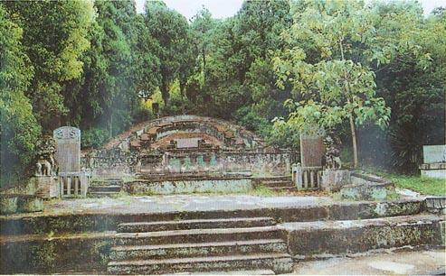
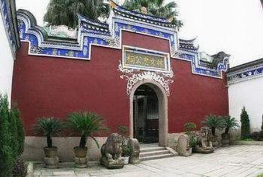
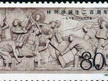

林则徐墓，在福州市省军区内，市郊马鞍村金狮山麓，坐北向南偏东南57度，面对五凤山。平面呈如意形，其墓为三合土夯筑，五层墓埕，面宽14.6米，纵深37米。封土隆起，形如覆釜。封土后护坡正中饰一圆形的“寿”字，直径0.82米。
封土前竖立一块高1.08米、宽2.55米、厚0.16米的墓碑，一是御赐祭文，一是御赐碑文。正中的供案桌上立长方形石碑牌，上镌楷书56字，写法属传统形式，读时先中行，继右行，随之左行，再回读右而后左，余此类推。
碑牌上所列官衔都是林则徐的，按当时“父以子贵”的规例，做父亲的死后也可以享用。供案左右的转角柱上镌有对联：“百丈松楸驯鹿土，千秋佳节卧牛眠。”碑面阴刻：“皇清诰封资政大夫、两淮盐政、前江苏按察使晹谷林公、配陈夫人，男少穆公、妇郑夫人，出继男雨人公、妇李孺人寿域。道光丙戌年仲夏吉旦立。”楷书，直下11行（读序自中、左、右），字径12厘米。
碑文中的“晹谷林公”为林则徐父林宾日（1749～1827年）；“陈夫人”为林则徐母陈帙（1759～1824年）；“少穆公”即林则徐，“郑夫人”为林则徐妻郑淑卿（1789～1847年）；“雨人公”为林则徐弟林霈霖，“李孺人”为霈霖妻李氏。此墓系清道光六年（1826年），林则徐因母丧守制，为其父母营造的，林则徐逝世后附葬于此。
行星命名2000年9月20日，在民族英雄林则徐诞辰215周年之际，坐落在林则徐出生地福州市左营司的“林则徐星”纪念碑揭幕，寓意着“林则徐星”从这里升起。1996年6月7日，中科院北京天文台陈建生院士发现了一颗小行星。按照国际小天体命名委员会的规定，谁发现了小行星，谁就拥有命名权。陈建生院士领导的施密特CCD小行星项目组和国际小天体命名委员会成员、北京天文台朱进博士，提议将新发现的这颗小行星命名为“林则徐星”。林则徐的禁毒和治水业绩，得到了国际社会的公认，因此国际小天体命名委员会批准了中科院的建议。“林则徐星”在火星与木星之间，沿椭圆轨道以4.11年的周期绕太阳运动。
纪念设施福州市有全国重点文物保护单位林则徐墓、福建省文物保护单位林文忠公祠（即林则徐纪念馆）和福州市文物保护单位林则徐出生地、林则徐故居、林则徐西湖读书处、升山摩崖题刻以及林则徐星石雕像等。
林则徐出生地纪念馆
林则徐出生地纪念馆位于福州市鼓楼区中山路，1997年被列入市级文物保护单位，2000年6月26日，福州市政府在馆内开辟了“福州市禁毒教育基地”。
林则徐故居（云左山房）又名“云左山房”，位于福州市鼓楼区文藻山北路（今称文北路），占地面积3500平方米。是林则徐逝世前在家乡的住处，1961年被列为福州市第一批市级文物保护单位。
林则徐纪念馆（林文忠公祠）
位于福州市鼓楼区澳门路16号，占地3000平方米。原是创建于清光绪三十一年（1905年）的林文忠公祠，自光绪三十四年（1908年）后，该祠屡被占作他用。1982年，福建省、福州市人民政府拨款修复，辟为林则徐纪念馆，对外开放。林则徐纪念馆为古典木构建筑，略呈长方形，坐西朝东。馆内主要部分有甬道、仪门、御碑亭、树德堂、南北花厅、曲尺楼、办公楼等。展览以大量的实物、照片、图表、模型等表现了林则徐爱国忧民的一生。特别是虎门销烟模型，采用现代的声光电手法，形象地再现1839年林则徐在广东虎门销烟的壮举。
林则徐基金会于1997年在纽约华埠立有林则徐铜像，铜像基座上题有中文“世界禁毒先驱林则徐”以及英文的“Pioneer in the War Against Drugs”。
林则徐纪念园2010年落成于广州市珠江江畔的海印桥北岸。
纪念银币1991年，金银币“中国杰出历史人物”第8组发行。林则徐银币是纪念金银币“中国杰出历史人物”第8组中的一枚。银币“林则徐”背面主图上的林则徐，手持“千里眼”，银须傲挺，双目怒睁，一脸威武，有不可侵犯的凛然大气。
林则徐银币面额：5元 ；重量：22克； 成色：90%； 发行量：30000枚。
纪念邮票1985年8月30日，中国人民邮政发行林则徐诞生200周年纪念邮票二种。面额人民币8分邮票，编号J.115（2－1）。面额人民币80分邮票，编号J.115（2－2）。
国际禁烟日林则徐禁烟、销烟受到了马克思的称赞。1858年，马克思在所著鸦片贸易专论里就肯定了林则徐的这一禁烟壮举。“国际联盟”把虎门销烟开始的6月3日定为“国际禁烟日”。（5月31日则是世界卫生组织发起的“世界无烟日”）